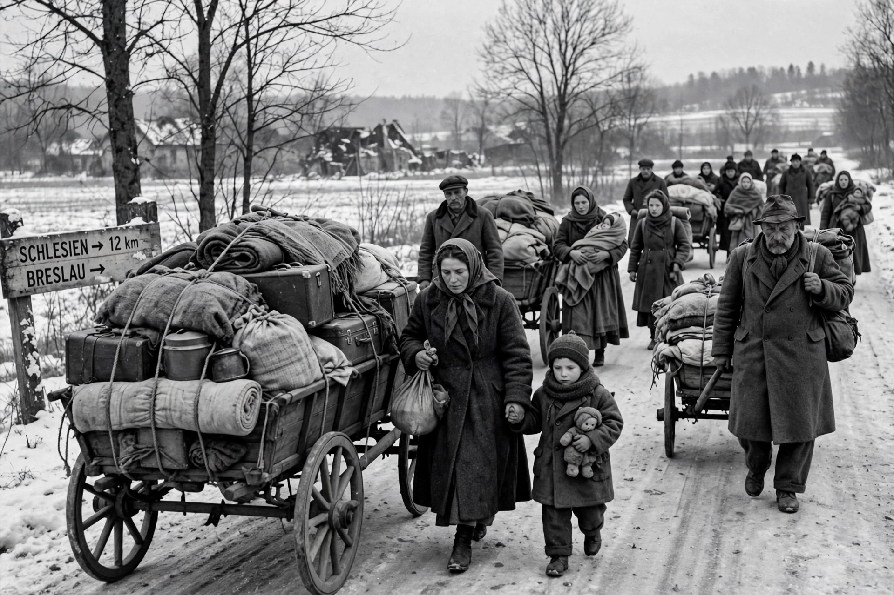
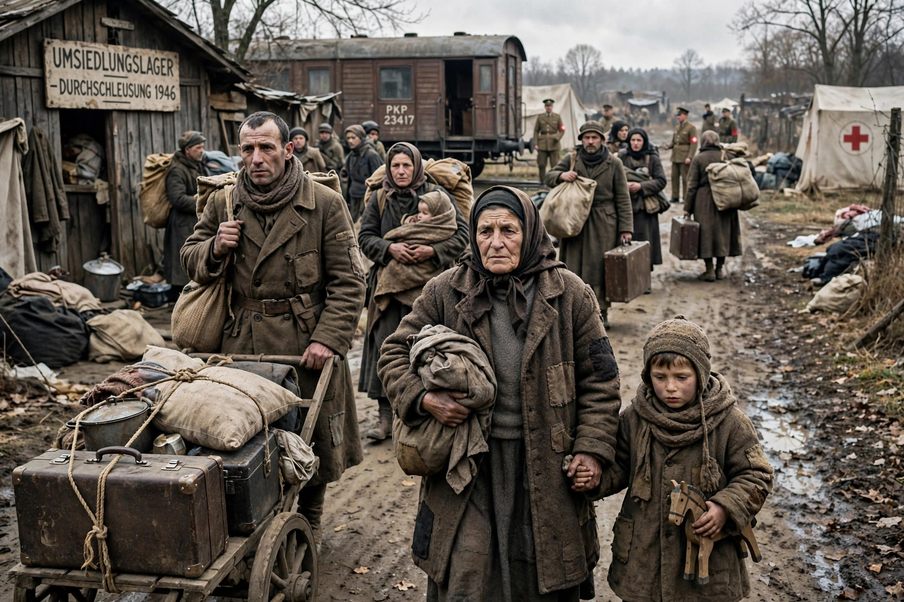

Population transfer


Population transfer is the large-scale movement of a population group, usually by state policy, from one region to another, often across new or contested borders. Transfers may be presented as exchanges, evacuations, or resettlements, but they are typically coerced: the affected people have little or no genuine choice. Population transfer differs from individual deportation or exile in its collective scale, and from voluntary migration in its compulsion. Where the purpose is to remove an ethnic or religious group from a territory, the modern term ethnic cleansing is used.
History
Forced resettlement is ancient: the Assyrian Empire deported conquered peoples on a large scale, and the Babylonian captivity of the Jews followed this pattern. In the modern era, notable cases include the expulsion of the Acadians from Canada (1755–1764); the removal of Native American peoples in the United States, such as the Cherokee Trail of Tears; the 1923 Greek–Turkish population exchange mandated by the Treaty of Lausanne, which moved roughly 1.5 million people under international supervision; and the expulsions of ethnic Germans from Eastern Europe after 1945, involving some 12–14 million people. The partition of India in 1947 displaced between 10 and 20 million people amid mass violence, though it was not a planned transfer. Soviet deportations of entire nationalities — Chechens, Crimean Tatars, Volga Germans, and others — to Central Asia in the 1940s caused very high mortality.
International law
Forced population transfer was prosecuted at Nuremberg as a crime against humanity. The Fourth Geneva Convention of 1949 (Article 49) prohibits forcible transfers and deportations of protected persons in occupied territory, and the Rome Statute of the International Criminal Court lists deportation or forcible transfer of population as a crime against humanity. The twentieth-century idea that transfer could be a legitimate instrument for resolving ethnic conflict — endorsed at Potsdam in 1945 for "orderly and humane" transfers — has been repudiated, and the right of return of displaced populations is now widely asserted, including by the Guiding Principles on Internal Displacement for those displaced within their own country.
See also
Deportation of the Acadians · Forced displacement · Exile · Political asylum
Categories: Population transfer · Forced migration · Crimes against humanity